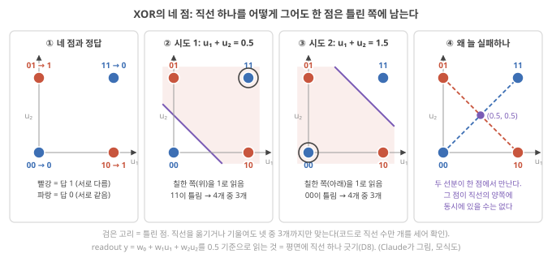

Day 17. 선형으로 못 푸는 계산: XOR과 선형 분리
Phase 2 · RC는 왜, 어떻게 작동하는가
이번 질문 선형 readout으로 풀 수 없는 계산은 무엇이고, 비선형 노드는 무엇을 더해 주나?
왜 배우나 (내 소재 연구와의 연결) 내 device의 응답이 계산에 쓸 만한 비선형인지는 I–V 곡선이 휘었는지가 아니라, 입력 이력 두 개를 따로 넣은 응답의 합이 함께 넣은 응답과 같은지(superposition test)로 가립니다. 이 시험은 내 device의 pulse response로 할 수 있고, 선형이면 delay tap 기준선과 같은 일밖에 못 한다는 것을 압니다.
오늘의 장면 (입력 → 내부 변화 → 출력) 입력 이력(10, 01, 11) → 상태 → 선형 readout. 상태가 입력의 가중합이면 x(10) + x(01) = x(11)(superposition 성립). tanh처럼 포화가 있으면 11의 상태가 달라져 입력들의 곱 같은 특징이 상태에 생기고, 그 곱 특징 덕에 XOR을 평면 하나로 가를 수 있음.
오늘 반드시 선형이면 superposition이 성립하고, 선형 reservoir의 상태는 지난 입력들의 가중합일 뿐이다. XOR처럼 입력들의 곱이 필요한 과제는 선형 readout으로 못 풀지만, 비선형 노드가 곱 특징을 상태에 남기면 푼다.
나중에 더 봐도 되는 것 선형 사상을 행렬로 쓴 증명, kernel(SVM) 요령(심화 접기). 오늘은 superposition 검사와 XOR 네 점만 따라가면 됩니다.
다음으로 넘어가는 기준 '오늘 반드시'를 내 말로 한두 문장 말할 수 있으면 됩니다. 나머지는 뒤의 Day에서 다시 나옵니다.
이후 쓰이는 곳 Day 19–20 차수별 information processing capacity, Day 21–22 선형 reservoir·2차 탭 기준선, Day 25–26 분리 성질. 내 device 응답이 입력 이력에 대해 superposition을 깨는지 판단
지난 학습 복습
지난 학습 단위(Day 16 · 고윳값·spectral radius·leak과 '느린 전류 → 계산'의 조건)의 핵심을 다른 예로 확인합니다. 고르는 즉시 맞았는지와 이유가 보입니다. 틀려도 아래 학습자료는 그대로 열려 있고, 틀린 문제에는 다시 볼 곳이 붙습니다.
사전 테스트 (선택)
사전 테스트 펼치기 · 배우기 전에 짐작해 보는 문제 (선택)
학습자료
Day 13–14에서 노드 두 개 reservoir가 "두 입력이 서로 다른가"(XOR)라는 질문에는 직선 하나로 답하지 못하는 것을 보았고, Day 15–16에서는 기억이 왜 필요하고 어떻게 흐려지는지를 보았습니다. 오늘은 reservoir의 다른 한 축, 비선형성입니다. 기억만 있고 비선형이 없으면 무엇을 못 하는지, 차원을 늘린다는 말이 왜 비선형과 함께여야 하는지, 그리고 이온 device의 휜 전류–전압 곡선이 그 비선형성을 주는지를 숫자로 따라갑니다.
이번 주제에서 답할 질문 — 아래 학습 구간들이 차례로 답합니다.
- 선형과 비선형은 정확히 무엇이 다른가? (superposition principle)
- 선형 readout으로 못 푸는 과제는 무엇인가? (XOR, parity를 손으로)
- "고차원으로 사상한다"는 말은 왜 비선형이어야 뜻이 있나? (선형으로 늘린 차원은 여전히 선형) 비선형 노드 하나는 곱을 어떻게 품나?
- 입력 하나를 여러 노드로 퍼뜨리는 방법: input mask와, device 하나를 시간으로 나눠 쓰는 time multiplexing
- 실제 reservoir로 XOR을 풀면? 어떤 비선형이 필요한가?
- device의 I–V 비선형성은 그 자체로 쓸모 있는 비선형성인가?
1. 선형과 비선형: superposition principle
상황. device에 펄스를 '앞 단계에 한 번'과 '지금 한 번' 따로 넣었을 때의 전류 변화를 더하면, 두 펄스를 함께 넣었을 때의 전류 변화와 같을까요? 같으면 선형이고, 다르면 비선형입니다. 계산에 쓸 만한 비선형을 가리는 첫 시험이 이것입니다.
왜 지금? XOR을 푸는 reservoir를 보려면 먼저 "선형이면 무엇을 못 하는가"를 정확히 해야 합니다. 그 정의가 superposition principle입니다.
어디에 쓰이나? 내 device 응답이 계산에 쓸 만한 비선형인지 판정하는 실험(펄스 열 10, 01, 11의 응답 비교)의 정의로 씁니다.
끝나면 할 수 있는 것. "선형 = superposition principle이 성립한다"를 숫자로 확인하고, 선형 reservoir의 readout은 결국 지난 입력들의 가중합이라서 delay tap 기준선과 같은 일밖에 못 한다는 것을 시뮬레이션 숫자(NMSE 0.144 대 0.146)로 말할 수 있다.
선형 함수와 비선형 함수: superposition principle이 깨지는 것
Day 13–14에서 본 검사에서 시작합니다. Day 13–14에서 노드 두 개 reservoir에 입력 이력 10(한 단계 전에 1), 01(방금 1), 11(둘 다 1)을 넣고 끝 상태를 비교했습니다. \(\tanh\)를 뺀 식에서는 \(x(10) + x(01) = (0.25, -0.55) + (1.0, -0.5) = (1.25, -1.05) = x(11)\)로 정확히 같았고, \(\tanh\)가 있는 식에서는 \(x(10) + x(01) = (0.926, -0.892)\)인데 \(x(11) = (0.823, -0.744)\)로 달랐습니다(Day 13의 superposition 검사). 오늘은 이 "따로 넣은 결과의 합 = 함께 넣은 결과인가" 검사를 선형의 정의로 삼습니다.
왜 그래프 모양으로는 부족한가. 그래프가 직선이냐 곡선이냐로 구별하는 것은 입력이 하나일 때만 통합니다. 입력이 여럿이고 시간에 따라 들어오면 그릴 그래프가 없으니 다른 기준이 필요합니다.
정의(superposition principle). 함수 \(f\)가 다음 두 가지를 만족하면 선형(linear)이고, 하나라도 어기면 비선형(nonlinear)입니다.
- 더한 것의 결과 = 결과의 합: \(f(a + b) = f(a) + f(b)\)
- 배수의 결과 = 결과의 배수: \(f(c \cdot a) = c \cdot f(a)\)
그림으로 먼저. 그림 1은 정의 1을 막대로 검사한 것입니다. 패널마다 막대가 넷 있고, 셋째 막대는 \(f(1)\)과 \(f(2)\)를 따로 계산해 쌓은 것, 넷째 막대(테두리만)는 1과 2를 함께 넣은 \(f(3)\)입니다. 셋째와 넷째의 높이가 같은지만 보세요. 막대 높이는 출력 \(f\)의 값입니다. (a)는 \(f(u) = 2u\), (b)는 Day 11–12에서 본 S자 함수 \(\tanh\)(입력이 커질수록 출력이 1에 눌리는 곡선, Day 11 기초)입니다.

숫자로. \(f(u) = 2u\): \(f(1) + f(2) = 2 + 4 = 6\), \(f(1 + 2) = f(3) = 6\). 같습니다. 선형입니다. \(f(u) = u^2\): \(f(1) + f(2) = 1 + 4 = 5\), \(f(3) = 9\). 다릅니다. 비선형입니다. \(\tanh\): \(\tanh(1) + \tanh(2) = 0.762 + 0.964 = 1.726\), \(\tanh(3) = 0.995\). 다릅니다. 비선형입니다. 둘을 따로 넣은 효과의 합과 함께 넣은 효과가 다르면, 그 차이가 "함께 있었다"는 정보이고 이것이 비선형의 쓸모입니다. Day 13–14의 차이 \((-0.103, +0.148)\)도 같은 종류의 몫이고, 뒤에서 이 몫을 '곱 특징'이라는 이름으로 다시 만납니다.
상수 하나는 예외로 둡니다. readout \(y = w_0 + w_1 x_1 + \cdots\)처럼 상수 \(w_0\)가 붙은 함수는 입력이 0일 때 출력이 0이 아니어서 엄밀히는 superposition principle을 어깁니다(예: \(y = 1 + 2u\)이면 \(y(1) + y(2) = 3 + 5 = 8\)인데 \(y(3) = 7\)). 그러나 상수를 뺀 부분 \(2u\)는 superposition을 지키고, 상수는 어떤 입력에도 똑같이 더해지는 몫이라 입력끼리 곱해지는 성분을 만들지 못합니다. 그래서 이 교재는 "곱해 더하기 + 상수"(아핀, affine)도 함께 선형이라 부릅니다. 오늘의 결론은 상수가 있든 없든 같습니다.
시간이 있으면. 함수의 입력이 "입력의 이력 전체"일 때도 같은 기준을 씁니다. 이력 A를 넣은 결과와 이력 B를 넣은 결과의 합이, A와 B를 칸마다 더한 이력을 넣은 결과와 같으면 선형입니다. 위의 Day 13–14 검사가 바로 이것입니다. 이력 10과 01을 칸마다 더하면 이력 11이 됩니다.
선형 reservoir가 하는 일. Day 13–14의 update식에서 \(\tanh\)를 빼면 \(x(t+1) = W x(t) + W_{in} u(t)\)입니다(Day 13 기초: state update식). 처음 상태를 \(x(0) = 0\)으로 두고 한 단계씩 넣어 봅니다(\(W^2\)는 표 \(W\)를 두 번 곱한다는 뜻).
- \(x(1) = W_{in} u(0)\)
- \(x(2) = W x(1) + W_{in} u(1) = W W_{in} u(0) + W_{in} u(1)\)
- \(x(3) = W x(2) + W_{in} u(2) = W^2 W_{in} u(0) + W W_{in} u(1) + W_{in} u(2)\)
한 단계가 지날 때마다 앞의 항들에 \(W\)가 하나씩 더 곱해질 뿐, 입력끼리 곱해지는 일은 한 번도 없습니다. 같은 규칙으로 계속 펼치면
\[ x(t) = W_{in} u(t-1) + W W_{in} u(t-2) + W^2 W_{in} u(t-3) + \cdots \]
즉 지난 입력들에 정해진 벡터(숫자 목록: \(W_{in}\), \(W W_{in}\), …)를 곱해 더한 것입니다. readout은 여기에 다시 weight를 곱해 더하므로, 최종 출력은
\[ y(t) = c_1 u(t-1) + c_2 u(t-2) + c_3 u(t-3) + \cdots \]
처럼 지난 입력들의 가중합(weighted sum)일 수밖에 없습니다(\(c_k\)는 readout과 \(W\)로 정해지는 숫자). Day 15–16의 노드 하나짜리 식 \(x(t) = u(t-1) + d\,u(t-2) + \cdots\)(Day 15 기초: fading memory)에서 숫자 \(d\) 자리에 표 \(W\)가 들어간 꼴입니다. 노드가 200개든 2,000개든, 선형 reservoir + 선형 readout이 할 수 있는 것은 "지난 입력에 숫자를 곱해 더하기"뿐입니다. 이것은 delay tap + 선형 회귀 기준선(지난 입력 \(k\)개를 메모리에 그대로 적어 둔 칸들을 readout에 넣는 것, Day 15의 기억을 얻는 두 방법, Day 21–22에서 직접 돌림)과 같은 종류의 계산입니다. 해석
특징(feature): readout이 받는 숫자 하나하나. readout은 받은 숫자들에 weight를 곱해 더합니다. 그 받은 숫자 하나하나를 특징(feature)이라고 부릅니다. Day 13–14의 노드 두 개 reservoir라면 특징은 \(x_1\), \(x_2\) 두 개이고, 상수 \(w_0\)까지 세면 weight는 셋입니다(\(y = w_0 + w_1 x_1 + w_2 x_2\)). delay tap 기준선이라면 특징은 저장해 둔 지난 입력 \(u(t-1), u(t-2), \dots\) 자체입니다. 뒤에서는 이 목록에 새 숫자(예: 두 입력의 곱)를 하나 더 붙이는 것을 "특징을 더한다"고 부릅니다.
시뮬레이션으로 확인. Day 21–22에서 직접 돌려 볼 시뮬레이션의 결과입니다. 측정이 아니라 시뮬레이션이고, 서로 다른 난수로 만든 reservoir 3개의 평균입니다. Claude가 tools/esn.py로 계산 과제는 NARMA10이라는 비선형 시계열 과제(Day 21–22에서 설명. 지금은 "지난 입력들의 곱이 필요한 과제"로만 읽으세요)이고, 점수는 오차 NMSE(0이면 완벽, 1이면 평균값만 찍는 것과 같음)입니다. 표의 특징 수는 위에서 정한 대로 readout이 받는 숫자의 개수입니다(delay tap 50개 + 상수 1 = 51, 노드 200개 + 지금 입력 + 상수 = 202).
| 방법 | 특징 수 | NARMA10 NMSE |
|---|---|---|
| delay tap 50개 + 선형 readout (reservoir 없음) | 51 | 0.146 |
| 선형 reservoir 200노드 + 선형 readout | 202 | 0.144 |
| tanh reservoir 200노드 + 선형 readout | 202 | 0.053 |
선형 reservoir는 노드가 200개인데도 delay tap 50개와 거의 같은 성적입니다. 지난 입력의 가중합 이상을 못 하기 때문입니다. 같은 노드 수에 \(\tanh\)만 넣으면 오차가 3분의 1로 줄어듭니다.
물리에서는. 다음 과정은 조건이 맞는 범위에서 입력에 대해 선형입니다. 해석
- 옴의 법칙 \(I = GV\): conductance \(G\)가 전압에 따라 변하지 않는 범위에서 전류는 전압에 비례합니다. 여기서 \(G\)는 device 하나 전체의 conductance(컨덕턴스, 단위 S, Day 7 기초)이고, 재료의 성질인 이온전도도 \(\sigma\) [S/m]와는 다릅니다. 두께 \(L\), 면적 \(A\)인 막이면 \(G = \sigma A/L\)입니다.
- 저항–capacitor(전하를 담는 그릇, Day 7 기초) 회로의 충·방전: \(R\)와 \(C\)가 전압에 따라 변하지 않으면 선형입니다(Day 29–30에서 손으로 계산).
- 묽은 용액에서 농도가 퍼지는 확산: 확산 계수가 농도에 따라 변하지 않으면 확산 방정식을 따르고, 두 농도 변화가 그대로 겹칩니다.
이런 과정은 Day 15–16의 기억(흐려지는 흔적)은 줄 수 있지만, 그것만으로는 오늘의 비선형을 주지 못합니다. 비선형의 후보는 위 조건이 깨지는 곳입니다. 다이오드의 정류(전기 정류: 한 방향으로 전류가 더 잘 흐르는 성질. 증류탑의 정류와 다른 말), 포화(saturation: 어느 값 이상은 더 오르지 않음), 문턱(threshold: 어느 값을 넘어야 반응함), 농도에 따라 바뀌는 이동도(운반자가 단위 전기장마다 얼마나 빨리 움직이는지를 나타내는 값, 정식 설명은 Day 35–36). 해석 다만 이런 휨이 있다고 곧 계산에 쓸모 있는 비선형인 것은 아닙니다. 그 구별이 오늘 끝 부분(I–V 비선형성)의 주제입니다.
- 선형 = superposition principle: \(f(a+b) = f(a)+f(b)\), \(f(ca) = cf(a)\). \(2u\)는 선형, \(u^2\)·\(\tanh\)는 비선형(\(\tanh 1 + \tanh 2 = 1.726 \neq \tanh 3 = 0.995\)).
- 선형 reservoir + 선형 readout의 출력은 지난 입력들의 가중합뿐 → delay tap 기준선과 같은 일.
- 시뮬레이션: 선형 reservoir 200노드 0.144 ≈ delay tap 50개 0.146, tanh reservoir 0.053(Claude의 시뮬레이션).
2. 선형 readout으로 못 푸는 과제: XOR과 parity
상황. '직전 두 번의 펄스 중 정확히 한 번만 있었나?'를 전류에 weight를 곱해 더하기만 해서 가를 수 있을까요? 못 가르는 과제가 있다는 것이 reservoir에 비선형 노드가 필요한 이유입니다.
왜 지금? 선형이면 가중합밖에 못 만든다는 것을 알았으니, 가중합으로는 안 되는 가장 작은 문제를 봅니다.
어디에 쓰이나? 논문이 XOR·parity 성능으로 "비선형 계산 능력"을 주장할 때, 그것이 곱 항을 만든다는 뜻임을 읽을 때 씁니다.
끝나면 할 수 있는 것. XOR의 네 점(00, 01, 10, 11)에서 직선 하나가 왜 늘 한 점을 틀리는지 그림과 부등식 네 줄로 보이고, ±1 표기에서 XOR이 "두 입력의 곱", 3-parity가 "세 입력의 곱"에 해당하는 더 높은 차수의 과제라는 것을 말할 수 있다.
XOR·parity: 선형 readout으로 못 푸는 과제
XOR(배타적 논리합, exclusive OR). 두 입력 \(u_1, u_2\)(각각 0 또는 1)가 서로 다를 때만 1을 냅니다.
| \(u_1\) | \(u_2\) | XOR |
|---|---|---|
| 0 | 0 | 0 |
| 0 | 1 | 1 |
| 1 | 0 | 1 |
| 1 | 1 | 0 |
그림으로 먼저: 네 점과 직선. 표의 네 줄을 평면의 네 점으로 찍습니다. 가로축이 \(u_1\), 세로축이 \(u_2\)이고, 답이 1인 점(01, 10)은 빨강, 0인 점(00, 11)은 파랑입니다. readout \(y = w_0 + w_1 u_1 + w_2 u_2\)를 "0.5보다 크면 1"로 읽는 것은 이 평면에 직선 하나를 긋고 한쪽을 1, 다른 쪽을 0으로 읽는 일입니다. 경계 \(w_0 + w_1 u_1 + w_2 u_2 = 0.5\)가 \(u_1\), \(u_2\)의 1차식이라 직선이기 때문입니다(Day 13의 readout 직선 긋기). 그림 2의 (b)와 (c)는 직선을 두 번 그어 본 것이고, (d)는 왜 어떻게 그어도 안 되는지를 보여 줍니다.

그림 2를 따라가면.
- 직선 \(u_1 + u_2 = 0.5\)의 위쪽을 1로 읽으면 01, 10은 맞지만 11도 위쪽이라 1로 읽혀 틀립니다. 4개 중 3개.
- 직선을 \(u_1 + u_2 = 1.5\)로 옮겨 아래쪽을 1로 읽으면 이번에는 00이 아래쪽이라 1로 읽혀 틀립니다. 역시 3개.
- 왜 늘 하나가 남는가. 00과 11을 잇는 선분(파랑 점선)과 01과 10을 잇는 선분(빨강 점선)이 가운데 점 (0.5, 0.5)에서 만납니다. 직선이 00과 11을 같은 쪽에 두면 둘을 잇는 선분 전체가 그쪽에 있고, 01과 10을 반대쪽에 두면 그 선분 전체가 반대쪽에 있어야 합니다. 가운데 점은 두 선분 모두에 속하니 양쪽에 동시에 있어야 하는데, 그럴 수는 없습니다. Day 13–14이 같은 결론을 보인 논리입니다.
계산으로 확인: 부등식 네 줄. 같은 결론을 숫자로 확인합니다. 선형 readout을 \(y = w_1 u_1 + w_2 u_2 + b\)로 씁니다(\(b\)는 위의 상수 \(w_0\)와 같은 것). "0.5보다 크면 1"로 읽을 때 네 줄이 모두 맞으려면
- (0, 0) → 0: \(b < 0.5\)
- (0, 1) → 1: \(w_2 + b > 0.5\)
- (1, 0) → 1: \(w_1 + b > 0.5\)
- (1, 1) → 0: \(w_1 + w_2 + b < 0.5\)
2와 3을 더하면 \(w_1 + w_2 + 2b > 1\). 1과 4를 더하면 \(w_1 + w_2 + 2b < 1\). 같은 양이 1보다 크면서 작을 수는 없습니다. 그러니 어떤 \(w_1, w_2, b\)로도 네 줄을 다 맞힐 수 없습니다. 그림 2(d)의 "가운데 점"을 식으로 쓴 것입니다. 2+3은 01과 10(빨강 선분의 양 끝), 1+4는 00과 11(파랑 선분의 양 끝)을 더한 것이고, 둘 다 가운데 점 (0.5, 0.5)에서 readout이 내는 값의 두 배입니다.
이렇게 직선 하나로 두 무리를 가를 수 있는 경우를 선형 분리 가능(linearly separable)하다고 합니다. 숫자가 셋이면 경계는 평면, 넷 이상이면 초평면(hyperplane: "1차식 = 상수"로 쓰이는 경계를 고차원으로 넓힌 것)이지만 뜻은 같습니다. XOR은 선형 분리가 안 되는 가장 작은 예입니다.
곱으로 보면. 입력을 0·1 대신 −1·+1로 적으면(0 → −1, 1 → +1), 둘이 같을 때 \(u_1 \times u_2 = +1\)(예: \((+1)(+1)\), \((-1)(-1)\)), 다를 때 \(u_1 \times u_2 = -1\)(예: \((+1)(-1)\))입니다. XOR은 두 입력의 곱의 부호로 정해집니다(곱이 −1이면 XOR = 1). 가중합 \(w_1 u_1 + w_2 u_2\)로는 곱을 만들 수 없으니 선형 readout이 못 하는 것입니다.
Parity(홀짝). 입력 여러 개 중 1이 홀수 개면 1을 냅니다. 2개짜리 parity가 XOR이고, 3-parity는 세 입력의 곱(\(u_1 u_2 u_3\), ±1 표기)의 부호로 정해집니다. 입력이 하나 늘 때마다 곱의 차수(order: 곱해지는 입력의 개수)가 하나 늘어, 더 높은 차수의 비선형이 필요합니다. Day 19–20에서 이 "차수"로 information processing capacity(지금 상태에서 readout이 여러 목표 신호를 각각 얼마나 되살리는지를 0~1 점수로 재어 더한 값. Day 15–16의 MC를 곱 같은 비선형 목표까지 넓힌 것)을 나눠 셉니다. 그림 3은 XOR(a)과 3-parity(b)의 입력 조합을 꼭짓점으로, 답을 색으로 그린 것입니다. (a)는 그림 2와 같은 축(가로 \(u_1\), 세로 \(u_2\))이고, (b)는 셋째 입력 \(u_3\)를 비스듬한 깊이 방향으로 더한 정육면체입니다. 선 하나는 입력 한 칸만 다른 두 조합을 잇습니다.

시간 판(지연 XOR). reservoir 과제로 쓸 때는 시간에 펼칩니다. "한 단계 전 입력과 두 단계 전 입력이 다른가?" \(y(t) = u(t-1) \oplus u(t-2)\)(\(\oplus\)는 XOR). 기억(Day 15–16)과 비선형이 둘 다 있어야 풀 수 있는, 가장 작은 시계열 과제입니다.
Liang은 물리 영역의 liquid state machine(LSM, 스파이크를 주고받는 뉴런 회로를 reservoir로 쓰는 방식, Day 11–12)이 2003년에 XOR과 음성 인식(speech recognition) 문제를 푸는 데 쓰였다고 소개하고 Liang 2024, p.194, 물리 노드는 입출력 사이에 비선형 함수를 제공해야 하며 그렇지 않으면 physical reservoir computing은 선형 분리 가능한 문제만 풀 수 있다, 나머지 네트워크(readout)가 보통 선형이기 때문이라고 씁니다. Liang 2024, p.197 오늘의 증명이 그 문장의 이유입니다.
3-parity를 0·1로 쓰면 (1, 1, 0)의 답은 무엇일까요? ±1로 바꾸면 세 입력의 곱은 얼마일까요? 아래 점검에서 확인하세요.
- XOR: 서로 다를 때만 1. 부등식 2+3과 1+4가 \(w_1 + w_2 + 2b\)를 1보다 크면서 작게 만들어 모순 → 선형 분리 불가.
- ±1 표기에서 XOR = 두 입력의 곱, 3-parity = 세 입력의 곱. 차수가 높을수록 더 높은 차수의 비선형이 필요하다.
- 물리 노드가 비선형이 아니면 physical reservoir computing은 선형 분리 가능한 문제만 푼다 Liang 2024, p.197.
3. 고차원 사상과 선형 분리: 선형으로 늘린 차원은 여전히 선형
상황. 논문은 전극이나 노드를 늘려 "고차원"으로 만들었다고 씁니다. 차원 수가 늘면 XOR이 풀릴까요?
왜 지금? XOR이 곱 항을 요구한다는 것을 알았으니, 차원을 늘리는 방법 가운데 어떤 것이 곱 항을 줄 수 있는지 가립니다.
어디에 쓰이나? "노드·전극이 많으니 고차원이다"라는 주장을 읽을 때 차원 수와 독립적인 비선형 조합의 수를 구별하는 데 씁니다.
끝나면 할 수 있는 것. XOR의 네 점을 (a) 그대로, (b) 선형으로 늘린 3차원, (c) 곱을 더한 3차원에 놓고 각각 최소제곱 readout의 출력(0.50 넷 / 0.50 넷 / 0, 1, 1, 0)을 설명하고, 곱 특징이 점 11을 들어 올려 평면 하나로 가르게 되는 과정을 따라가며, \(\tanh\) 노드 하나가 곱 특징을 −0.560의 무게로 품는다는 것을 계산해 보일 수 있다.
선형 분리와 고차원 사상 (선형 사상은 차원을 늘려도 여전히 선형)
고차원 사상. 입력 \((u_1, u_2)\)를 숫자 여러 개짜리 목록 \((z_1, z_2, z_3, \dots)\)으로 바꾸는 것을 사상(mapping, 옮겨 적기)이라 하고, 목록이 원래보다 길면 고차원 사상이라고 합니다. reservoir의 상태 \(N\)개가 입력의 고차원 사상입니다(Day 13 기초).
특징 하나를 더한다는 것. 앞에서 readout이 받는 숫자 하나하나를 특징이라고 불렀습니다. 특징이 두 개면 각 입력은 평면 위의 점입니다. 특징을 하나 더하면 점마다 좌표가 하나 늘어, 점이 바닥에서 위로 들어 올려집니다. 새 숫자가 그 점의 '높이'가 되는 것입니다. 3차원에서 readout의 경계 \(w_0 + w_1 z_1 + w_2 z_2 + w_3 z_3 = 0.5\)는 여전히 1차식이라, 직선이 한 차원 올라간 평면입니다. 그러니 질문은 하나입니다. 점들을 들어 올린 뒤, 평면 하나로 빨강과 파랑을 가를 수 있나? 같은 네 점을 세 가지로 옮겨 적어 봅니다(그림 4). readout은 Day 13–14의 최소제곱으로 맞춥니다. 네 점에서 (출력 − 정답)²의 합이 가장 작아지도록 weight를 고르는 방법입니다(Day 13 기초: 최소제곱과 ridge).

(a) 그대로 두면. XOR 절에서 본 대로 직선 하나로는 못 가르고, 최소제곱 readout은 네 점 모두에 0.50을 냅니다. \(u_1\) 쪽으로 기울이면(\(w_1\)을 키우면) 정답이 1인 10과 정답이 0인 11의 출력이 함께 올라가, 하나가 좋아지는 만큼 하나가 나빠집니다. \(u_2\) 쪽도 마찬가지(01과 11)입니다. 그래서 기울이지 않고 정답의 평균 0.5를 내는 것이 오차 제곱합이 가장 작습니다(가장 덜 틀리는 답이 "모르겠다"인 것).
(b) 선형으로 늘리면. \(z = (u_1, u_2, u_1 + u_2)\)처럼 셋째 숫자를 앞의 둘을 더해 만들면 차원은 3이 됩니다. 그런데 readout은
\[ w_1 z_1 + w_2 z_2 + w_3 z_3 = w_1 u_1 + w_2 u_2 + w_3(u_1 + u_2) = (w_1 + w_3)\,u_1 + (w_2 + w_3)\,u_2 \]
로, 결국 원래 두 입력의 가중합입니다. XOR 네 점은 들어 올려지기는 하지만 모두 \(z_3 = z_1 + z_2\)라는 비스듬한 평면 위에 놓이고(그림 4b), 그 평면 위에서 가르는 문제는 (a)와 똑같습니다. 최소제곱 readout은 (a)와 똑같이 네 점 모두에 0.50을 냅니다. 숫자를 몇 개 더 붙여도, 그것들이 모두 \(u_1\), \(u_2\)에 숫자를 곱해 더한 것이면 같은 방법으로 \(u_1\)끼리, \(u_2\)끼리 모을 수 있어 결국 \(u_1\), \(u_2\)의 가중합이 됩니다(예: weight (1, 2, 3)이면 \(1 \cdot u_1 + 2 \cdot u_2 + 3(u_1 + u_2) = 4u_1 + 5u_2\)). 그래서 선형 사상은 몇 차원으로 늘려도 readout 입장에서는 원래 입력의 선형 함수입니다.
심화 · 같은 말을 행렬로: \(w \cdot z = (A^{\mathsf T} w) \cdot u\)
새 숫자들이 모두 \(u_1, u_2\)의 가중합이면 행렬 \(A\)를 곱한 것, \(z = Au\)로 쓸 수 있습니다. 위 예는 \(A\)의 세 행이 (1, 0), (0, 1), (1, 1)인 경우입니다. readout의 가중합을 풀어 \(u_1\)끼리, \(u_2\)끼리 모으는 계산을 한꺼번에 적으면 \(w \cdot z = (A^{\mathsf T} w) \cdot u\)입니다. \(A^{\mathsf T}\)는 \(A\)의 행과 열을 바꾼 표(전치, Day 13의 전치·역행렬)입니다. 위 예에서 \(A^{\mathsf T} w = (1 + 3,\ 2 + 3) = (4, 5)\)로 손 계산과 같습니다.
(c) 비선형으로 늘리면. \(z = (u_1, u_2, u_1 \cdot u_2)\)처럼 셋째 숫자를 곱으로 만들면, 네 점은 (0,0,0), (0,1,0), (1,0,0), (1,1,1)이 됩니다. readout \(y = z_1 + z_2 - 2 z_3\)을 계산하면 00 → 0, 01 → 1, 10 → 1, 11 → \(1 + 1 - 2 = 0\). XOR이 정확히 나옵니다. 최소제곱도 이 답(0, 1, 1, 0)을 찾습니다. 이 readout을 0.5 기준으로 읽으면 경계는 \(y = 0.5\)가 되는 곳, 곧 기울어진 평면 \(z_3 = (z_1 + z_2 - 0.5)/2\)입니다(아래 단계 3에서 유도). 3차원에서 평면 하나가 두 무리를 가른 것인데, 그 평면이 어디에 있고 점들이 어느 쪽에 있는지 한 단계씩 따라가 봅니다(그림 5).

단계 1 — 새 특징을 계산한다. \(z_3 = u_1 \times u_2\): 00 → 0, 01 → 0, 10 → 0, 11 → 1. 넷 중 11만 0이 아닙니다.
단계 2 — 높이로 읽는다. \(z_3\)를 높이로 그리면 00, 01, 10은 바닥에 그대로 있고 11만 높이 1로 들어 올려집니다(그림 5(b)). 2차원에서 대각선으로 엇갈려 있던 파랑 둘(00, 11) 가운데 하나가 위로 빠져나온 것입니다.
단계 3 — 평면을 찾는다. readout \(y = z_1 + z_2 - 2z_3\)를 0.5 기준으로 읽으면, 경계는 \(z_1 + z_2 - 2z_3 = 0.5\)입니다. 높이 \(z_3\)에 대해 풀면 \(z_3 = (z_1 + z_2 - 0.5)/2\), 곧 기울어진 평면입니다. 네 자리에서 이 평면의 높이를 재면 00 자리 −0.25, 01·10 자리 0.25, 11 자리 0.75입니다.
단계 4 — 점은 평면의 위인가 아래인가. 00: 점 높이 0 > 평면 −0.25(위). 01·10: 0 < 0.25(아래). 11: 1 > 0.75(위). 평면보다 아래이면 \(y > 0.5\)라 1, 위이면 0으로 읽으니 결과는 0, 1, 1, 0, 곧 XOR입니다(그림 5의 표). 11이 들어 올려지지 않았다면(높이 0) 평면 높이 0.75보다 아래라 1로 잘못 읽혔을 것입니다. 들어 올림 하나가 11을 평면의 반대쪽으로 넘겨 준 것입니다.
단계 5 — 경계를 바닥 좌표로 옮긴다. 경계 \(z_1 + z_2 - 2z_3 = 0.5\)에 \(z_1 = u_1\), \(z_2 = u_2\), \(z_3 = u_1 u_2\)를 넣으면 \(u_1 + u_2 - 2u_1 u_2 = 0.5\)입니다. 0.5를 왼쪽으로 옮겨 정리하면 \(-2(u_1 - 0.5)(u_2 - 0.5) = 0\)(괄호를 풀면 원래 식이 됩니다), 곧 \(u_1 = 0.5\) 또는 \(u_2 = 0.5\). 바닥에서 보면 경계는 직선 두 개가 만든 십자이고, 01과 10은 서로 마주 보는 두 칸, 00과 11은 나머지 두 칸에 들어갑니다(그림 5(c)). 바닥의 직선 하나로는 못 하던 가르기를 3차원의 평면 하나가 해낸 것입니다. readout은 여전히 '곱해 더하기'(3차원의 평면)이고, 굽힘은 전부 새 특징 \(z_3\)에서 왔습니다.
정리. 차원을 늘리는 것 자체가 아니라, 새 차원이 기존 숫자들의 가중합이 아닌 것(비선형 조합)이어야 분리가 쉬워집니다. 서로 가중합 관계가 없는 숫자 \(N\)개를 "선형 독립"(linearly independent)이라고 부르는데, Day 13–14의 "거의 같은 노드 둘"은 이 조건을 거의 어긴 경우였고, Day 19–20에서 이것이 용량의 상한이 됩니다.
비선형 노드 하나가 곱 특징을 품는다
위에서는 곱 \(u_1 u_2\)를 사람이 직접 계산해 붙였습니다. reservoir는 곱을 따로 계산하지 않습니다. 입력을 섞은 값을 \(\tanh\) 같은 굽은 함수에 넣을 뿐입니다. 노드 하나로 확인합니다. 노드가 두 입력을 같은 무게로 받아 \(h = \tanh(u_1 + u_2)\)를 낸다고 합시다(Day 13–14 update식에서 \(W_{in}\)이 (1, 1)이고 지난 상태가 없는 노드 하나).
| 점 | 노드가 받는 값 \(u_1 + u_2\) | \(h = \tanh(u_1 + u_2)\) | 노드가 곧았다면: \(0.762\,(u_1 + u_2)\) | 차이 |
|---|---|---|---|---|
| 00 | 0 | 0 | 0 | 0 |
| 01 | 1 | 0.762 | 0.762 | 0 |
| 10 | 1 | 0.762 | 0.762 | 0 |
| 11 | 2 | 0.964 | 1.524 | −0.560 |
넷째 열은 01과 10의 값을 그대로 더해 11을 예상한 값, 곧 "노드가 superposition을 지켰다면"의 값입니다. 차이는 11에서만 0이 아닙니다. 이 몫은 \(h(11) - h(01) - h(10) + h(00) = 0.964 - 0.762 - 0.762 + 0 = -0.560\)으로 한 줄에 셀 수 있고, superposition 절의 "따로 넣은 합 ≠ 함께 넣은 값"과 같은 종류입니다. 그런데 네 점에서 "11에서만 0이 아닌 숫자"는 곱 \(u_1 u_2\)(00, 01, 10에서 0, 11에서 1)에 그 몫을 곱한 것과 같습니다. 곧 이 네 점에서는
\[ h = 0.762\,u_1 + 0.762\,u_2 - 0.560\,u_1 u_2 \]
입니다. 노드 값 안에 곱 특징이 −0.560의 무게로 들어 있습니다. readout이 \((u_1, u_2, h)\) 세 숫자를 받으면 이 곱을 꺼낼 수 있습니다. 위 식을 \(u_1 u_2 = (0.762\,u_1 + 0.762\,u_2 - h)/0.560\)으로 고쳐 (c)의 readout \(u_1 + u_2 - 2u_1 u_2\)에 넣고 정리하면
\[ y = -1.724\,u_1 - 1.724\,u_2 + 3.577\,h \]
입니다. 확인: 00 → 0, 01 → \(-1.724 + 3.577 \times 0.762 \approx 1.00\), 11 → \(-3.448 + 3.577 \times 0.964 \approx 0.00\). XOR입니다. 앞의 곱 특징 예에서 곱 \(z_3\) 자리에 \(h\)를 넣은 것과 같은 일입니다. 거기서는 11만 위로 들렸고, 여기서는 11만 "곧았다면 있었을 높이"(1.524)에서 0.560만큼 아래(0.964)로 비켜나 다른 세 점이 놓인 평면을 벗어납니다. 방향은 반대여도 11 하나만 따로 움직인다는 점이 같습니다. 숫자는 Claude 계산
어디서 깨지나: 노드가 거의 곧으면. 노드가 받는 값을 20분의 1로 줄여 \(h = \tanh(0.05\,(u_1 + u_2))\)로 하면 \(h\)는 0, 0.04996, 0.04996, 0.09967이고, 곱의 몫은 \(0.09967 - 2 \times 0.04996 = -0.00025\)로 앞의 2천분의 1 남짓입니다. 곱을 꺼내려면 readout이 \(h\)에 약 8,000을 곱해야 하고, 그러면 \(h\)에 섞인 측정 잡음(예: 0.001)도 8,000배(약 8)로 커져 답을 덮습니다. Day 13–14에서 거의 같은 두 노드에 weight가 크게 튀던 것(Day 13의 거의 같은 노드 둘)과 같은 모습이고, 뒤의 '입력 0.05' 실험이 이 경우입니다. 숫자는 Claude 계산
Day 13–14의 노드 두 개로는 왜 못 갈랐나. Day 13–14의 reservoir도 \(\tanh\)가 있었고 superposition이 깨졌지만, readout이 받은 숫자는 \(x_1\), \(x_2\) 둘(상수까지 weight 셋), 곧 평면의 직선 하나였고 그 네 점은 엇갈려 있었습니다(Day 13의 readout 직선 긋기). 위의 예는 readout에 \(u_1\), \(u_2\), \(h\) 세 숫자(상수까지 weight 넷)를 줬습니다. 점 네 개가 3차원에서 한 평면 위에 놓이지 않으면 평면 하나로 어떤 두 무리로든 나눌 수 있고(더 읽을거리의 Cover 1965 결과의 가장 작은 경우), \(h\)가 비선형이라 11이 평면 밖으로 들려 이 조건이 성립한 것입니다. 해석 서로 다른 비선형 조합이 하나 더 필요했던 것이고, 노드를 늘리거나(아래 'reservoir에서는') device 하나를 시간으로 나눠 쓰는(time multiplexing) 이유가 여기 있습니다.
심화 · 커널: 특징을 직접 만들지 않고 같은 효과를 내는 요령(SVM)
아래 영상 제목의 SVM(서포트 벡터 머신, support vector machine)은 두 무리 사이에 여유가 가장 넓은 직선(평면)을 긋도록 학습하는 선형 분류기입니다. 경계가 직선(평면)이라는 점은 readout과 같습니다. 커널(kernel)은 새 특징 목록을 하나하나 만들어 저장하지 않고, 두 점의 늘린 특징 목록끼리 곱해 더한 값만 바로 계산하는 요령입니다. 예를 들어 두 점 \(a = (a_1, a_2)\), \(b = (b_1, b_2)\)에 대해 다항식 커널 \((a_1 b_1 + a_2 b_2)^2\)을 전개하면 \(a_1^2 b_1^2 + a_2^2 b_2^2 + 2 a_1 a_2 b_1 b_2\)입니다. 이것은 각 점의 특징을 \((a_1^2,\ a_2^2,\ \sqrt{2}\,a_1 a_2)\)처럼 늘린 뒤 두 목록을 곱해 더한 것과 같고, 그 안에 두 좌표의 곱 특징(XOR 예의 \(u_1 u_2\)와 같은 꼴)이 들어 있습니다. [해석: 기계학습 교재의 표준 내용이며 폴더 원문과는 대조하지 않음] reservoir에서는 이 늘리기를 계산 요령 대신 물리 동역학이 하고, 아래에 나오는 'kernel quality'의 kernel도 이 비유를 빌린 말로 볼 수 있습니다. 해석
Reservoir에서는. 위의 노드 하나는 곱 하나를 −0.560의 무게로 품었습니다. 노드가 여럿인 reservoir도 상태를 일부러 \(u_1 u_2\)처럼 만들어 주지는 않습니다. \(\tanh\)가 입력들을 섞어 굽히는 과정에서 곱과 비슷한 성분들이 여러 노드에 조금씩, 서로 다른 비율로 섞여 들어가고, readout이 그것들을 골라 더합니다(Day 13–14에서 본 "둘 다 1"의 흔적). Stepney는 난수 weight가 입력을 고차원 공간으로 무작위 사상하고, 그래서 학습한 선형 출력으로 원하는 분리를 이룰 수 있다고 씁니다. Stepney 2024, p.668 그리고 reservoir의 계산 용량은 관측 가능한 노드 수가 정한다며, 선형 출력층이 서로 다른 입력 부류를 가를 수 있도록 충분한 차원이 관측 가능해야 한다고 씁니다. Stepney 2024, p.673 Liang은 이상적인 physical reservoir computing라면 노드 상태들이 고차원 공간에서 선형 분리 가능하게 될 것이라며, 이를 재는 지표로 kernel quality(서로 다른 입력열이 끝에 남긴 상태들을 모은 표의 계수(rank), 즉 그 상태들 가운데 서로의 가중합이 아닌 것이 몇 개인가)를 소개합니다. Liang 2024, p.200 (kernel quality는 Day 25–26에서 다룹니다.)
"노드(전극, 측정 채널)를 많이 늘리면 고차원이니까 분리가 잘 된다" — 늘린 숫자들이 서로의 가중합(선형으로 늘린 3차원 예)이거나 같은 것을 거의 그대로 반복하면, 차원 수는 늘어도 readout이 쓸 수 있는 정보는 늘지 않습니다. 필요한 것은 "서로 다른 비선형 조합"이 늘어나는 것입니다. Singh 2026은 전극이 많다고 reservoir가 계산적으로 풍부한 것이 아니며, 중요한 것은 readout이 실제로 관측할 수 있는 재현 가능하고 서로 중복되지 않는 국소 응답이라고 씁니다. Singh 2026, p.5
- 앞 숫자들의 가중합으로 늘린 차원은 readout에게 여전히 원래 입력의 가중합이다(weight (1, 2, 3) → \(4u_1 + 5u_2\)). XOR에서 (a)와 (b) 모두 출력 0.50 넷.
- 곱 하나(\(u_1 u_2\))를 더한 (c)는 \(z_1 + z_2 - 2z_3\)으로 XOR을 정확히 낸다.
- \(\tanh\) 노드 하나 \(h = \tanh(u_1 + u_2)\)는 네 점에서 \(0.762\,u_1 + 0.762\,u_2 - 0.560\,u_1 u_2\)와 같아, readout \(-1.724\,u_1 - 1.724\,u_2 + 3.577\,h\)가 XOR을 낸다. 노드가 거의 곧으면(입력 0.05배) 곱의 몫이 −0.00025로 줄어 잡음에 묻힌다.
- 분리를 돕는 것은 차원 수가 아니라 서로 다른 비선형 조합. 관측 가능한 차원이 충분해야 한다 Stepney 2024, p.673, 이상적인 상태는 고차원에서 선형 분리 가능하다 Liang 2024, p.200, 채널 수 ≠ 풍부함 Singh 2026, p.5.
학습 완료
이 학습 단위를 마쳤으면 눌러 주세요. 쓰기·영상·심화·추가 연습은 필요 없고, 퀴즈 점수와도 따로 기록됩니다. '완료'는 이 단위를 끝냈다는 표시이지 모든 내용을 완벽히 익혔다는 뜻이 아닙니다.